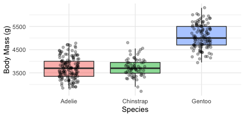
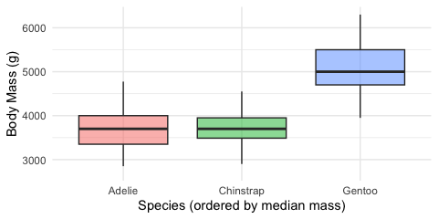

# Load packages at the top — always -------------------
library(tidyverse) # wrangling + ggplot2
library(palmerpenguins) # the penguins data
library(car) # Anova()Lecture 19 — One-Way ANOVA I: Start to Finish
From the question to a reported F — the whole basic ANOVA in one pass
anova
factors
tidyverse
statistics
The complete basic one-way ANOVA, beginning to end: why one test instead of many t-tests, what the F-statistic is, ordering groups with factors, fitting lm(), reading the table with aov(), car::Anova(type = 2) and car::Anova(type = 3) — including the contrasts option Type III needs — and writing the result up. Assumptions and follow-up tests are Lecture 20.
Where we left off
- T-Tests I & II — comparing the means of two groups with Welch’s t-test
- Regression (Lecture 11) —
lm(Y ~ X)with a numeric predictor - Weather (Lecture 12) — the same
lm(), with a slope read as a rate - Pivoting & Joins (Lectures 15–16) — getting messy data into one tidy table so a model can be fitted to it at all
Note
✅ Transition
The t-test compared two groups. Biology is full of three-or-more group questions — three species, four sites, five treatments. Today’s twist: it is still lm(Y ~ X), just with a categorical X. That is one-way ANOVA.
Goals for today
Today is the whole basic ANOVA, start to finish:
- Why we do not run many t-tests
- What the F-statistic is
- State the hypotheses
- Use factors to order the groups on the plot
- Fit it with
lm() - Read the table —
aov(),Anova(type = 2),Anova(type = 3) - Report the result in a sentence
Tools today:
palmerpenguins,tidyverse(includesforcats)car—Anova()
Textbook:
- 📖 Whitlock & Schluter, Ch. 15 — ANOVA
- 📖 R4DS Ch. 16 — Factors
Naming: models → _model, plots → _plot
Three Sets of Material, Three Days
| Set | Where | What |
|---|---|---|
| 1 — The basic ANOVA | today, Lecture 19 | question → plot → lm() → F table → report |
| 2 — The assumptions | Lecture 20 | residual normality, equal variance, what to do when they fail |
| 3 — The follow-up tests | Lecture 20 | which groups differ — emmeans, Tukey, letters |
Important
We do Set 1 all the way through first — including a reported result — so you see the shape of the whole analysis before we start poking at it. A real write-up would check the assumptions before trusting that p-value, and that is exactly what Lecture 20 does.
How to Use These Slides — Predict · Type · Run
I lecture through the material, then you open the skeleton script and run the code yourself.
For every code block, do three things:
- Predict — before it runs, say what you think the output will be
- Type it out by hand — do not copy-paste
- Run it and compare to your prediction
Note
✅ Why bother? (the evidence)
- With three groups it is tempting to just read off the tallest box. Predicting the F first makes you reason about between- vs. within-group variance.
- Typing
type = 2yourself inAnova()is what makes you notice it is there. - You will meet
anova(),aov()andAnova()in one lecture. Typing each one is how they stop blurring together.
Why Not Just Run Many t-Tests?
With 3 groups you would need 3 t-tests (A–B, A–C, B–C). With 4 groups, 6 tests.
Every test at α = 0.05 has a 5% chance of a false positive. Run several and those risks stack up:
- 3 tests → ~14% chance of at least one false positive
- 6 tests → ~26%
ANOVA asks the question once, holding the overall error rate at 0.05.
Important
The multiple-comparisons problem
More tests = more chances to be fooled by noise. ANOVA is the single, honest test for “do any of these groups differ?”
📖 W&S §15.1 — why a single test
What One-Way ANOVA Asks
One numeric response (Y) across the levels of one categorical predictor (X).
| Hypothesis | |
|---|---|
| H₀ — null | all group means are equal (\(\mu_1 = \mu_2 = \mu_3\)) |
| Hₐ — alternate | at least one group mean differs |
Note what Hₐ does not say: it does not tell you which group differs — that is Set 3, next lecture.
Our question today:
Do the three penguin species differ in body mass?
- Y =
body_mass_g - X =
species(Adelie, Chinstrap, Gentoo)
The F-Statistic — Between vs. Within
\[F = \frac{\text{variance BETWEEN groups}}{\text{variance WITHIN groups}}\]
- Between — how far apart the group means are
- Within — how much the individuals scatter inside each group
Big F → the groups are far apart relative to their internal noise → small p-value.
F ≈ 1 → the spread between groups is no bigger than the spread within them → no real difference.
Note
✅ Key idea
ANOVA is a signal-to-noise ratio — the same shape as t. The “signal” is the gap between group means; the “noise” is the within-group scatter.
📖 W&S §15.1–15.2
Meet the Data — Palmer Penguins
# Drop rows missing mass or species -------------------
penguins_df <- penguins %>%
drop_na(body_mass_g, species)
penguins_df %>% count(species)# A tibble: 3 × 2
species n
<fct> <int>
1 Adelie 151
2 Chinstrap 68
3 Gentoo 123Three species, one field station: body mass (g) of penguins at Palmer Station, Antarctica.
drop_na()removes rows with missing masscount(species)gives the sample size per group
Important
The groups are unbalanced — 151, 68 and 123 birds. That is why we care which sums of squares Anova() uses.
⚠️ Two Different penguins Data Sets
R 4.5 added its own penguins to base R, with shorter column names:
| Source | Mass column |
|---|---|
palmerpenguins::penguins |
body_mass_g |
base R datasets::penguins |
body_mass |
If you forget library(palmerpenguins), penguins still exists — so there is no “object not found” error. You get a column-name error later instead.
Important
The error you would see
penguins %>% drop_na(body_mass_g)
#> Error in `drop_na()`:
#> ! Can't select columns that don't exist.
#> ✖ Column `body_mass_g` doesn't exist.The fix: library(palmerpenguins) at the top. We use the _g names all lecture.
Explore First — Boxplot by Species
mass_box_plot <- penguins_df %>%
ggplot(aes(x = species, y = body_mass_g, fill = species)) +
geom_boxplot(alpha = 0.5, outlier.shape = NA) +
geom_jitter(width = 0.15, alpha = 0.3, size = 1.5) +
labs(x = "Species", y = "Body Mass (g)") +
theme_minimal() +
theme(legend.position = "none")
mass_box_plot
Note
🔮 Predict first: all three species, or just one? Which is heaviest?
Always plot before you test.
- Gentoo sits well above the other two
- Adelie and Chinstrap are almost on top of each other — hold that thought
- The box heights are not all equal — hold that one too (Set 2)
- The order is alphabetical, not by mass
species Is a Factor — and Factors Have an Order
class(penguins_df$species) # "factor"[1] "factor"levels(penguins_df$species) # the stored order[1] "Adelie" "Chinstrap" "Gentoo" - A factor is a categorical column with a fixed, ordered set of levels
ggplot(andlm) draw and model groups in level order- The default level order is alphabetical — almost never what you want
Note
✅ Key idea
Alphabetical order hides the pattern. Ordering the groups by the thing you are testing — here, body mass — makes the boxplot tell the story at a glance.
forcats (the fct_* family) ships with library(tidyverse).
Order the Boxplot by Body Mass — fct_reorder()
penguins_df %>%
mutate(species = fct_reorder(species, body_mass_g,
.fun = median)) %>%
ggplot(aes(x = species, y = body_mass_g, fill = species)) +
geom_boxplot(alpha = 0.5, outlier.shape = NA) +
labs(x = "Species (ordered by median mass)",
y = "Body Mass (g)") +
theme_minimal() +
theme(legend.position = "none")
fct_reorder(f, x, .fun = median)— reorder factorfby a summary ofx- Do it inside
mutate(), then plot the result - Here the alphabetical order happens to already be the mass order — but now it is that way on purpose, and it will hold for data where it does not
Tip
The full forcats family — rename levels, merge them, lump rare ones — is in Common Code 15 · Factors. Today we need ordering, and fct_relevel() for the baseline in a moment.
State the Hypotheses — Before Any Code
H₀: \(\mu_{\text{Adelie}} = \mu_{\text{Chinstrap}} = \mu_{\text{Gentoo}}\)
Hₐ: at least one species mean differs from the others
α = 0.05
That is the whole hypothesis set. There is one test and one p-value, no matter how many groups you have.
Important
Hₐ is deliberately vague. “At least one differs” is all the F-test can tell you. If you want to name the species, you need the follow-up tests — Set 3.
Fit the Model — lm()
# ANOVA is a linear model with a categorical X --------
mass_model <- lm(body_mass_g ~ species, data = penguins_df)lm(Y ~ X)— the same function call as regression- When
Xis categorical, that linear model is a one-way ANOVA - Fitting the model and reading a table from it are two separate steps
Note
✅ Key idea
You do not write anything different to get an ANOVA instead of a regression. lm() looks at the class of X and codes it for you. One function, two tests.
📖 W&S §15.2
What lm() Did With a Factor — the Baseline
coef(mass_model) (Intercept) speciesChinstrap speciesGentoo
3700.66225 32.42598 1375.35401 (Intercept)is the mean of the first level — Adelie- The other coefficients are differences from Adelie
- Chinstrap is +32 g; Gentoo is +1375 g
This is treatment coding (contr.treatment) — R’s default. Each group is compared with a baseline group.
Note
Remember this phrase: treatment coding compares every group with the first level. It comes back in two slides when we ask Anova() for Type III.
Change the Baseline — fct_relevel()
# Make Gentoo the reference instead -------------------
penguins_relevel <- penguins_df %>%
mutate(species = fct_relevel(species, "Gentoo"))
mass_model_gentoo <- lm(body_mass_g ~ species,
data = penguins_relevel)
coef(mass_model_gentoo) (Intercept) speciesAdelie speciesChinstrap
5076.016 -1375.354 -1342.928 fct_relevel(species, "Gentoo")moves Gentoo to the front → the coefficients are now differences from Gentoo
Important
Releveling changes which comparisons the coefficients show. It does not change the overall F or p-value — “do any means differ?” is the same question whichever group you call the baseline.
Use it to make the baseline a group your reader cares about — a control, a reference site.
Read the Table — aov() and summary()
Note
🔮 Predict first: The boxplot was very separated. Predict the p-value — nearer 0.5, 0.05, or far below 0.001?
# The classic ANOVA table -----------------------------
mass_aov <- aov(body_mass_g ~ species, data = penguins_df)
summary(mass_aov) Df Sum Sq Mean Sq F value Pr(>F)
species 2 146864214 73432107 343.6 <2e-16 ***
Residuals 339 72443483 213698
---
Signif. codes: 0 '***' 0.001 '**' 0.01 '*' 0.05 '.' 0.1 ' ' 1Reading the table:
| Column | Meaning |
|---|---|
Df |
groups − 1, then residual df |
Sum Sq |
variation explained / left over |
F value |
between ÷ within |
Pr(>F) |
the p-value for H₀ |
p < 0.05 → reject H₀ → at least one species differs.
Three Function Names, One Idea
| Call | Package | Gives you |
|---|---|---|
aov(y ~ x) + summary() |
base R | the classic ANOVA table |
anova(model) |
base R | Type I (sequential) table |
Anova(model) |
car | Type II table (the default) |
Anova(model, type = 3) |
car | Type III table |
Lowercase anova() and capital Anova() are different functions from different packages. R will not guess which you meant.
Important
Anova() lives in car. Without library(car) you get
could not find function "Anova"With one predictor all four of these give the same F for species. The differences only bite once you have two or more predictors — which is exactly why we build the habit now.
car::Anova() — Type II Is the Default
# No type argument = Type II --------------------------
Anova(mass_model)Anova Table (Type II tests)
Response: body_mass_g
Sum Sq Df F value Pr(>F)
species 146864214 2 343.63 < 2.2e-16 ***
Residuals 72443483 339
---
Signif. codes: 0 '***' 0.001 '**' 0.01 '*' 0.05 '.' 0.1 ' ' 1Why Type II?
- Our groups have different n (unbalanced)
- Type I is order-dependent — swap the predictors and the table changes
- Type II is order-independent, and it is the habit you want before two-way ANOVA, where the type genuinely changes the answer
Anova(mass_model, type = 2) is the same thing, written out.
Type III Needs a Different Contrast Coding
Type III sums of squares are only meaningful when the factors are coded so each group is compared with the grand mean — contr.sum — not with a baseline group (contr.treatment).
# What is R using right now? --------------------------
getOption("contrasts") unordered ordered
"contr.treatment" "contr.poly" That is R’s default: treatment coding for unordered factors, polynomial for ordered ones.
Important
The rule
Anova(model, type = 3) wants
c("contr.sum", "contr.poly")Ask for Type III on a treatment-coded model and car will still print a table — it just will not be the Type III test you think it is.
Switch to contr.sum — and Refit
# 1. change the option -------------------------------
options(contrasts = c("contr.sum", "contr.poly"))
# 2. REFIT the model under the new coding ------------
mass_model_sum <- lm(body_mass_g ~ species,
data = penguins_df)
# 3. now Type III means what it says -----------------
Anova(mass_model_sum, type = 3)Anova Table (Type III tests)
Response: body_mass_g
Sum Sq Df F value Pr(>F)
(Intercept) 5312367201 1 24859.28 < 2.2e-16 ***
species 146864214 2 343.63 < 2.2e-16 ***
Residuals 72443483 339
---
Signif. codes: 0 '***' 0.001 '**' 0.01 '*' 0.05 '.' 0.1 ' ' 1
Important
Step 2 is not optional
A model stores the coding it was fitted with. Change the option and reuse the old model and nothing happens:
mass_model$contrasts
#> $species
#> [1] "contr.treatment"Set the option, then lm() again.
And Switch Back — Always
# Put R back the way you found it ---------------------
options(contrasts = c("contr.treatment", "contr.poly"))
getOption("contrasts")[1] "contr.treatment" "contr.poly" options() is global and sticky — it stays changed for the rest of your session and affects every model you fit afterwards, including ones in code you wrote weeks ago.
Tip
The pattern to memorize
options(contrasts =
c("contr.sum", "contr.poly"))
m <- lm(y ~ x, data = df)
Anova(m, type = 3)
options(contrasts =
c("contr.treatment", "contr.poly"))Set → refit → test → set back. Four lines, in that order, every time.
What Actually Changed? Only the Intercept Row
Treatment coding, type = 3:
Sum Sq Df F value
(Intercept) 2.07e9 1 9676.9
species 1.47e8 2 343.6
Residuals 7.24e7 339Sum coding, type = 3:
Sum Sq Df F value
(Intercept) 5.31e9 1 24859.3
species 1.47e8 2 343.6
Residuals 7.24e7 339The species row is identical — 343.6 either way. Only (Intercept) moved, because the intercept means something different under each coding (Adelie’s mean vs. the grand mean).
Note
✅ So why bother?
With one factor, you cannot see the difference in the row you care about. With two factors and an interaction, you can — the predictor rows change too. Learn the four-line pattern on the easy case, so it is automatic on the hard one.
Which Table Should You Report?
| Situation | Use |
|---|---|
| One factor, any design | any of them — they agree. Anova(model) is a fine habit |
| Two+ factors, balanced | all three types agree |
| Two+ factors, unbalanced | Type II for main effects with no interaction |
| Interaction you want to keep in | Type III, with contr.sum |
Tip
In this course: report Anova(model) (Type II) unless you have a specific reason. Know the Type III recipe because reviewers, SPSS and SAS users ask for it by name.
Report the Result
# The numbers you need, in one table ------------------
Anova(mass_model)Anova Table (Type II tests)
Response: body_mass_g
Sum Sq Df F value Pr(>F)
species 146864214 2 343.63 < 2.2e-16 ***
Residuals 72443483 339
---
Signif. codes: 0 '***' 0.001 '**' 0.01 '*' 0.05 '.' 0.1 ' ' 1“Body mass differed significantly among the three penguin species (one-way ANOVA: F(2, 339) = 343.6, p < 0.001).”
Always include:
- the test (one-way ANOVA)
- F, both df, the p-value
- the direction, once you know it
Never write “p = 0.000” — write “p < 0.001”.
Important
Notice what the sentence does not say: which species differ. It cannot — and neither can you, yet.
🛑 Now Go Run It — The Whole Activity
Open scripts/19_anova_1_skeleton.R and work through Parts 1–10. Everything on these slides is in there, in order. Predict each output before you run it.
The homework is at the bottom of the same script: the same analysis, start to finish, on a measurement you choose — flipper_length_mm, bill_length_mm or bill_depth_mm. Keep that column; Lecture 20’s homework checks the assumptions and runs the follow-up tests on the same one.
Tip
The skeleton has a invisible(NULL) line after every chunk. It is a bumper: when you press Ctrl/Cmd + Enter on the last line of a chunk, your cursor lands on the bumper instead of jumping to the next real code, far down the file.
What We Learned Today
Concepts:
- Many t-tests inflate the false-positive rate — ANOVA asks once
- F = between-group ÷ within-group variance
- A factor’s level order sets the plot order and the model baseline
- ANOVA is a linear model with a categorical predictor
- Type I / II / III differ in how they allocate sums of squares; Type III needs
contr.sum, and the model must be refit
R skills:
fct_reorder(),fct_relevel()lm(Y ~ group),coef()aov()+summary(),anova(),car::Anova()options(contrasts = ...)— set, refit, test, set back
References:
- 📖 W&S Ch. 15 — ANOVA
- 📖 R4DS Ch. 16 — Factors
Up next — Lecture 20:
- Set 2 — the assumptions. We reported p < 0.001 today without earning it. Are the residuals normal? Are the variances equal? One of those answers is going to be no.
- Set 3 — the follow-up tests. Adelie and Chinstrap looked identical on the boxplot. We find out whether they are.